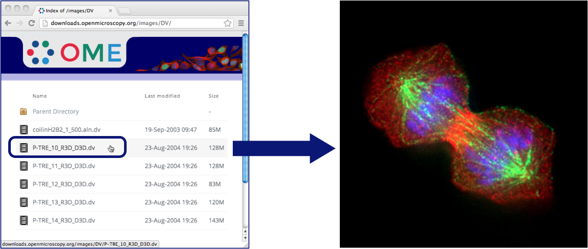
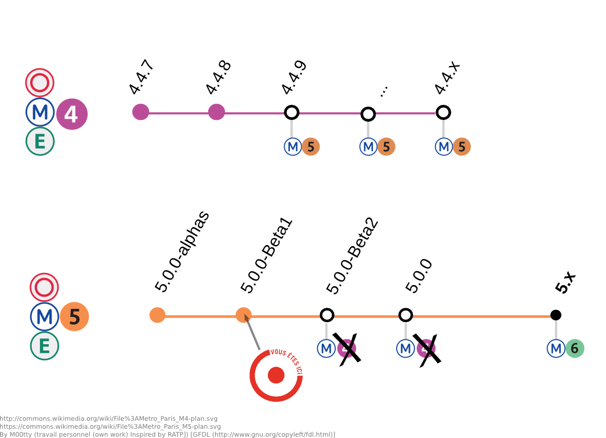
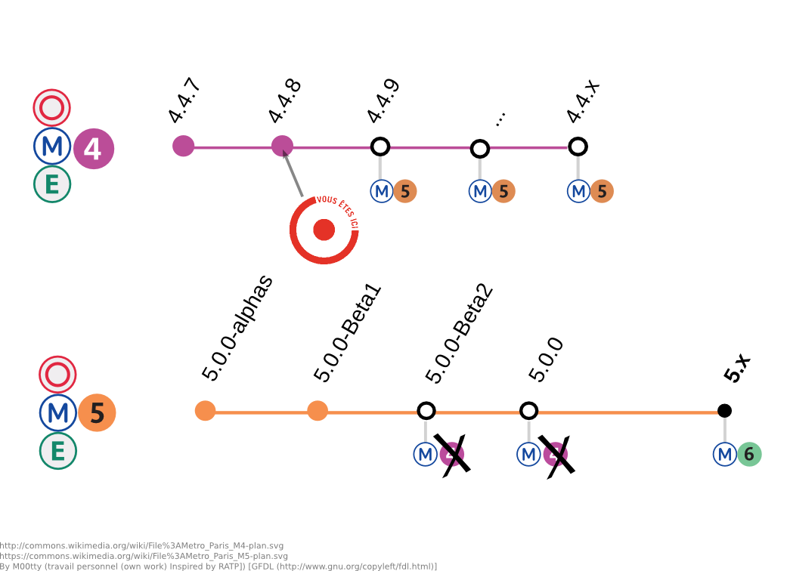

FS Workshop
Paris 2013
How OMERO 5 uses FS to preserve your original image files on OMERO.server and avoid data duplication.
Outline
- Before FS
- Introducing FS
- DEMO #1: Importing and Downloading
- Advantages of FS
- Introducing Filesets
- DEMO #2: Moving and Deleting
- Migrating to FS
- Building on FS
OMERO 4
- server stores Pixels files
- additionally, original files may be stored
- data duplication
- in triplicate for big images
OMERO 4
Getting Data In

OMERO 4
Getting Data In
- client software extracts planes from image files
- server stores and uses Pixels files
- Pixels files are uncompressed, so may be large
- additionally, original files could be archived
- data is duplicated
OMERO 4
Getting Data Out

OMERO 4
Getting Data Out
- clients obtain rendered images from server
- Pixels structure is optimized for reading
- rendering is thus a fast, direct process
- original files only available if archived
OMERO 5
- server does not store Pixels files
- only original files are stored
- no data duplication
- except for big images without subresolutions
OMERO 5
Getting Data In

OMERO 5
Getting Data In
- clients upload only the original files
- can disconnect after upload
- client and server compare files to check integrity
- no data duplication
OMERO 5
Getting Data Out

OMERO 5
Getting Data Out
- server now uses Bio-Formats in rendering
- Bio-Formats extracts planes from original files
- Bio-Formats performance much improved
- original files always available for download
Some Numbers
DV
(~125MB)
| pre-fs | pre-fs (archived) | fs | |
|---|---|---|---|
| import | 22 s. | 26 s. | 18 s. |
| avg. plane view | 0.19 s. | 0.18 s. | 0.20 s. |
| size on disk | 128 MB | 256 MB | 128 MB |
LEI
(~130MB / 140 TIFFs)
| pre-fs | pre-fs (archived) | fs | |
|---|---|---|---|
| import | 27 s. | 44 s. | 107 s. (?) |
| avg. plane view | 0.67 s. | 0.67 s. | 0.72 s. |
| size on disk | 73 MB | 200 MB | 131 MB |
SVS
(~500MB)
| pre-fs | pre-fs (archived) | fs | |
|---|---|---|---|
| import | 23 s. | 23 s. | 36 s. |
| pyramids | 90 min. | 90 min. | n/a |
| avg. plane view | 0.25 s. | 0.25 s. | 0.23 s. |
| size on disk | 5.5 GB | 5.5 GB | 500 MB |
InCell
(~9GB/~1000 TIFFs)
| pre-fs | pre-fs (archived) | fs | |
|---|---|---|---|
| import | 23 min. | n/a | 34 min. |
| avg. plane view | 0.50 s. | n/a | 0.71 s. |
| size on disk | 9 GB | n/a | 9 GB |
tl;dr
| pre-fs | pre-fs (archived) | fs | |
|---|---|---|---|
| import | fastest | always slower | working on it |
| avg. plane view | fast | fast | still a bit slower |
| size on disk | usually smallest | always bigger | original size |
FS in Action
Importing and Downloading
We now demonstrate import and download in OMERO 5.
FS in Action
Importing and Downloading
- no archive checkbox
- file import is fast
- import log, aids debugging slow/failed
- checksums dialog for file integrity
- file paths popup
- download files, content intact
- SVS viewable, uses subresolutions
No Data Duplication
- OMERO 5 does not create Pixels files
- no duplication of image data on server
- except for big images without subresolutions
- preserve original data structure
- uploaded image files readable by other software
- need not duplicate image data outside FS
More FS Advantages
- OMERO.server becomes master data repository
- easily share data, reproduce analyses
- protect against data loss on local systems
- each upload has an import log recorded
- Bio-Formats improvements benefit existing data
Introducing Filesets
- a set of related files
- Bio-Formats must read them together
- a set of images, arising from those files
- may be just one file and one image
- Project/Dataset, Screen/Plate hierarchy remains
One File → One Image
One File → Many Images

Many Files → Many Images

Many Files → One Image
- e.g. lei, metamorph?
Fileset Indivisibility
- files must be kept together for Bio-Formats
- must also associate the files' images
- server prohibits certain acts on partial filesets
- move between groups
- delete
FS in Action
Moving and Deleting
We now demonstrate move and delete in OMERO 5.
FS in Action
Moving and Deleting
- change group: partial fails
- change group: complete succeeds
- split fileset images across datasets
- delete: partial fails
- delete: complete succeeds
Migrating to FS
- new OMERO users should try out OMERO 5
- upgrades will be provided between each beta
- and to 5.0.0 and beyond
- upgrades from OMERO 4 currently being tested
- process for upgrade to be released after summer
- pre-FS data will be supported
Migrating to FS
Migrating to FS
Building on FS
- reconsider fileset handling (deletion, etc.)
- server-side recovery from partial deletes?
- detect and report post-upload file corruption
Next-Generation FS
Getting Data In

Next-Generation FS
Getting Data In
- import without Bio-Formats on clients
- all file format scanning done on server
- file upload from web client
- ability to upload unknown file formats
Any Feedback?
- We welcome questions and comments on FS.
- What further work on FS would be most useful?
- Would you like to try out FS at your site?
The Managed Repository
/home/data/sample$ tree zeiss-lsm-martin/ # Files local to client
zeiss-lsm-martin/
├── 01-01.lsm
├── 01-02.lsm
└── 051215-j-tf.mdb
/OMERO/ManagedRepository/josh_0$ tree . # Files on the server
.
├── 2013-06
│ ├── 17
│ │ ├── 09-02-55.180
│ │ │ ├── 01-01.lsm
│ │ │ ├── 01-02.lsm
│ │ │ └── 051215-j-tf.mdb
│ │ ├── 09-02-55.180.log
Configuring FS
etc/omero.properties
- Managed Repository Directory
omero.data.dir=/OMERO/
omero.managed.dir=${omero.data.dir}/ManagedRepository
omero.fs.repo.path=%user%_%userId%/%year%-%month%/%day%/%time%
Configuring FS
etc/omero.properties
Permitted File Naming
omero.fs.repo.path_rules=Windows required, UNIX required
Configuring FS
etc/omero.properties
Default Checksum Algorithm
omero.checksum.default=SHA1-160also Adler-32, CRC-32, MD5-128,
Murmur3-32, Murmur3-128
FS in SQL
Find an Image's Fileset
SELECT fileset FROM image WHERE id = ?
FS in SQL
Find Images in Fileset
SELECT name FROM image WHERE fileset = ?
FS in SQL
Find Paths of Files in Fileset
SELECT of.path || of.name FROM originalfile of, filesetentry fse WHERE of.id = fse.originalfile AND fse.fileset = ?
FS in SQL
Find Checksums of Files in Fileset
SELECT of.name, ca.value, of.hash FROM originalfile of, filesetentry fse, checksumalgorithm ca WHERE of.hasher = ca.id AND of.id = fse.originalfile AND fse.fileset = ?